ねねころー！
牛乳は背が伸びますようにとか
そーゆーことじゃないんだってー
ほんとかなーねえーほんとなのかなー
かわいーねねころーすきー

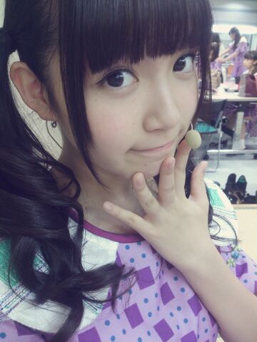
手が小さい( ；ω；)
気がつけばあさってからテストです！
笑えなーい！
高２の二学期の期末！なかなか大事やで！
５日間もテスト受けるなんて
どうにかなってしまいそう......
でもひめたんはがんばるよー∩^^∩
全国の学生のみなさーん
一緒にがんばろうねっ
いつもたくさんコメントありがとうございます＊
なんだか最近コメント数が増えてる気がして
もちろん数が全てじゃないけど
とっても嬉しい！
みなさん忙しいなか書いてくださって
本当にありがとー(＊^O^＊)
ひめたんも更新するのがいつも楽しみだよー♪♪
さて、MJ観たよーとか
ナタリーグラビア見たよーとか
報告ありがとうですっ
やっぱり巻きおろしヘアが好評みたいで嬉しす
ナタリーさんの時は触角を全部収めたんだよー！
メンバーさんの間では
触角なしのがいいよーって言ってくれるんだけど
ひめたんはちょっと抵抗があるのよね......
あっそれから前回の質問！
好きな曲ってのがみなさん
結構バラバラでびっくりしました
それだけ良い曲が揃ってるんだよねー
ひめたんはねーなんだろうなー
バレッタ好きなのよ∪^ω^∪
やさしさとは ライブでもいっぱい歌いたいな♪
声のタイプがみんな違うから
厚みがあってステキな曲でしょ？
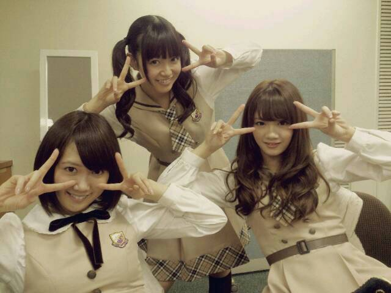
びーむ！
３人ですると威力も３割増！
うん？３倍？
どっちでもいーや( ´ ▽ ` )ノ

 寒くなってきた冬に
寒くなってきた冬に
どんなピンクの服きればいいですか？冬はぴんく小物とか
かわいらしいんじゃないかしら( ω )
グレー × ぴんく のマフラーとか
ブラウン × ぴんく のワンピースとか
かわいらしいよねっ
なにか一つなんでも知れるとしたら
何が知りたい?logって何ですか？
molって何ですか？
......すみません私はアイドルでした。
じゃあーそうだな
５リットルのポリバケツで
バケツプリンを作ろうと思ったら
卵は何個いりますか？にしようかな☆
ひめたんに僕の部屋においてある
でっかいぬいぐるみにあだ名つけてほしいな！ くまりーぬちゃん＊
おとこのこでもおにゃーのこでもアリでしょ？
ひめたんビームで肉って焼けますか？
焼けますよね！？
焼き肉パーティーしましょ！(笑)ひめたんビームを
何だと思ってるんですかね( ^ω^ )
いいですか一度しか言いません
ひめたんビームは！
みなさんを！
きゅんきゅんさせられたらそれでい！い！の！
そりゃ焼肉パーティは楽しそうだけれども！
お肉焼くにはガスコンロがあるでしょー！
僕は目が細いです！！
ということで、ひめたんのパッチリな目
僕に半分分けてくれませんか？？？ 喜んでー( ^ω^ )っておーい( ^ω^ )ノ
ひめたんビームは
肩こり、腰痛、霜焼けに効きますか？用法用量を守ってねー( ^ω^ )っておーい( ^ω^ )ノ
そんなんで治るかーいっ
そんなんで治ったらひめたん
アイドルなんてやってないわーいっ
後ひめたんビームで干し椎茸が
早く戻せるって本当ですか？おーい( ^ω^ )ノノノノノノノノノノノノノノノノ
ひめたんのブログの
コメント欄下２ケタに46を踏んだ方へ
手書きでコメ返するコーナー
＼ ひめたん46 ／
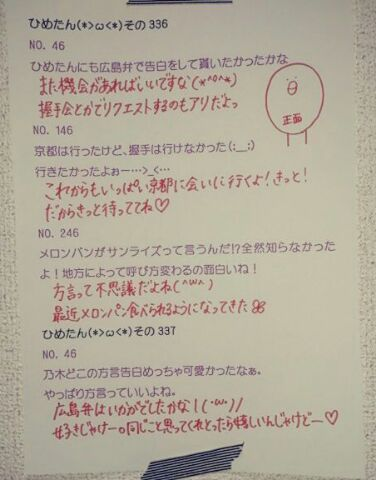
写めの質問返しの最後に
最近よく登場するトリさんには
名前ないのー？ってたまに聞かれるんですが
名前かあ......
つけてあげたら嬉しいかなー
じゃ、じゃあ
『とりりーぬさん』
(＊´・ω・＊)
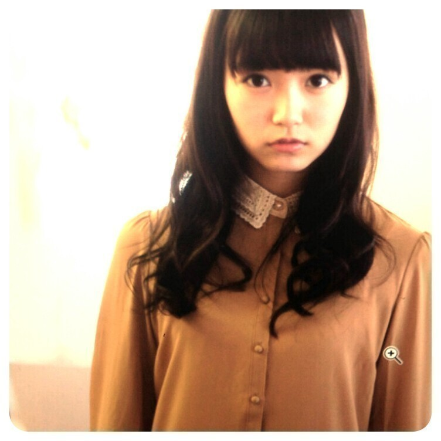
ナタリーグラビア公開されました*\(^o^)/*
初々しい感じが伝わりますかねー
グラビア初めてで緊張したんですよー
でもとっても楽しい撮影でしたっ
こうやっていっこいっこ
新しい経験をさせていただけるの
ステキなことだよね
ナタリーさんステキなお写真
ありがとうございました！
初グラビアがナタリーさんで
ほんとに心強かったです(＊´;ω;｀＊)
さて！
7thシングル「バレッタ」
無事発売日を迎えることができました
自分たちのシングルってのは
どれも大切な作品だけど
取り分けて7枚目は思い出深いなあ。
あっそうそう
通常盤がいま手元にあるよーって方は
よかったら見てみてほしいのが
いっちゃんラストのページで
愛称占いしてるの
ひめたんだよー∩^^∩
◎11/29(金) ネクストメジャー・アイドルSpecial
◎11/30(土) BUBKA
ぜひチェックしてみてください☆
ブブカさんの方は
インタビューの一部がサイトにも
載っけていただいてるみたいなので
よかったら飛んでみてー♪
http://bubkaweb.com/idol/archives/191
あっ公式サイトのプロフィール写真
変わったみたいだよー☆
私たちのニューシングル「バレッタ」がフルサイズの配信もスタートしてます！！
レコチョクではダウンロードしてくれた方の中から
抽選で、お気に入りメンバーのメッセージ入りポスターやサイン入り色紙をプレゼントします!!
是非、チェックしてみてね♪
詳しくは公式HPでみてね！
DLはこちら！
http://recochoku.com/nogizaka46/barrette/sp/

 ひめたんの好きな
ひめたんの好きな
クリスマスソングを教えてください。恋人がサンタクロース とかかな(*^O^*)
ひめたんはこういうコメントきたら
嬉しいってありますか???かまちょかまちょーな性格なので
どんなこと書いてあっても嬉しいです( ^ω^ )/
いつもありがとーう！
背伸ばしたいんだけど、
どぅしたらのびるかなぁ？いっぱい背のびしたらいーと思う♪
ねねころは牛乳飲んでるらしいよー(*´ `*)
ひめたんはなに太郎が好き？ハム太郎！
テケテケを実際に見た事ある？
テケテケ。作品の名前であってますか？見たことないです(´・ω・｀)
教えてくれてありがとーうっ
女の子は女の子らしい方がやっぱいいのかな？
どうしたらひめたんみたいに
女の子らしくなれますか？乃木坂にもいろんなタイプがいるし
自分の理想を大事にするのがいちばんだと思うけど
ひめたんはおにゃーのこを満喫したい人です＊
ひめたんもまだまだ全然だーけど
理想像があるかないかっておっきいと思うなー
会えないときの寂しさを紛らわすのは
何したらいいですか？？？まさに今この期間ねっ
何でしょう。CD解禁を待って
作品を観倒し聴き倒してはいかが？
次に会ったときに
ふああああってなるんじゃないかな♪
ひめたんは学校には
どんな髪型していってるの？
やっぱ、ひめたん結び？笑気分が乗ればがんばって
編み込んでみたり巻いてみたり
ひめたん結びしてみたりするんだけど
気分が乗らない日は何もしなかったり......
お待たせしましたコーナー名！
たくさん考えてくださって
ありがとうございました( ´ ▽ ` )
全部書き出してみたの
そんでねいろいろ考えたんだけどね
やっぱりステキな名前ばっかりで
決められなかったから
ひめきゅんさんの総意とゆーことで
いちばん多かったのにしました♪♪
ひめたんのブログの
コメント欄下２ケタに46を踏んだ方へ
手書きでコメ返するコーナー
＼ ひめたん46 ／
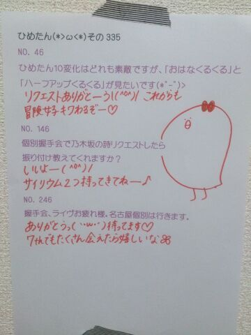
7thシングルの６曲の中で
いちばん好きな曲は何ですかー？
(＊´・ω・＊)
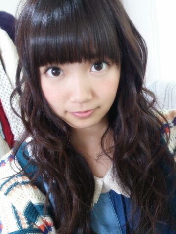
いよいよ明日は
7thシングル「バレッタ」発売日！
乃木坂ファミリーさんには
そりゃ全type制覇して、乃木坂ちゃんを
堪能していただきたいものですが(小声)
ひめきゅんさんには特に
これ観てー聴いてーってやつを紹介します＊
◎Type-B「そんなバカな・・・」MV
まあ単純にひめたんにとって
お気に入りのMVなので
ぜひテレビの液晶でみてほしい♪♪
結構細かいところとかこだわって
作っていただけたみたいなので
アイドル部の部室に置いてあるものとかさっ
◎Type-C 個人PV
監督には
「とにかく楽しんでください」とだけ
指示を受けましたのでとにかく楽しみました！
今までの個人PVの中では
いっちゃん素です。素も素。ど素です。
それで、何をしたかとゆーと
パラグライダーをしました*\(^o^)/*
ほんとに感動しました
ここ最近でいちばん感動しました。
みなさんもお空を飛びたくなったら
ぜひパラグライダーを。
石田真 監督＊
ステキな作品ありがとうございました
公式サイトのコメントもとっても嬉しかったです！
◎通常盤「やさしさとは」
歌うことが好きなひめたんにとって
こうしてユニットに呼んでいただけるのは
本当に嬉しいことです(( ´ ▽ ` ))
メンバーは
生田、西野、能條、橋本、松村、若月、中元。
聴きごたえのあるナンバーに
仕上げていただいたかなと思いますっ
詞もほんとにステキなのー！
＊Sound Room収録
＊YOU PAPER取材
させていただきました∩^^∩
本当にありがたいことですっ
よかったらチェックしてみてね！
ナタリーさんのバック８グラビア
そろそろ解禁の予感......♪

 ひめたんの
ひめたんの
オススメ入浴スタイルとかありますか??ひめたんはいろんなもの持ち込みますよー
スマホとか本とか。それで長居するのが好き。
みなさんもやってみてー
でも気をつけてねー♪
ひめたんの好きな曜日は何曜日？？？？ 土曜日、とか好きです
午前中学校行って午後からオフの日とか
うわー何しよう！何して過ごそう！ってなる＊
結局半分は寝て過ごしちゃうことがザラにあるけど
それも含めて土曜日は好きです(´ω`)
日芽ちゃん...
俺来年から東京離れて北海道に就職するんだけど、
最近現実味が出てきたのか寂しくなってきた
癒してくれーwww大丈夫ー？寂しいよね(´・ω・｀)
それを聞いたらひめたんも切なくなってきたよー
まずはこの冬の間に行っておきたいところ
会っておきたい人をリストアップしてみたら
ちょっとワクワクするんじゃないかしら。
まほたんもひめたんみたく
ふわふわかわいくなりたい
どーしたらなれるかな？ふわふわかわいく。
ひめたんもなりたいのー♪
一緒にがんばろ(*´ `*)ねっ？
ひめたんのゆかりんの好きな曲を
是非教えてください^^どれもステキですよね！
童話迷宮
fancy baby doll
Fantastic future
とか特に好きです///
ひめたんの理想の身長は何cmですか？160センチ欲しかった......
ひめたんの実家の近くには
自然はいっぱいありますかー？
田んぼはあったりしますかー？ 田んぼ......は見なかったな
でも落ち着いてるところだよー
学校からは山も海も見えて空が広かった
外で体育とか気持ちよかったなー。
まなみのりさってアイドル知っとる？ 最近りっちゃんが連絡くれました
嬉しかったなー///
ひめたんの代のスクール生にとっては
ASHのトップの３人って感じで、
でも私たち後輩にとっても優しくしてくれて。
一緒にユニット組んだり
クラスが一緒だった時期もありました
尊敬する先輩でありお姉さんです(*^O^*)
新しくマフラー買おうと思ってるんだけど,
どんなのがいーと思う~ デザインも大事だけど
風邪引くのがいちばんだめだから
あったかいのにしてねー？
ふわふわもこもこのとかはどうかなー＊
アイドルになりたいの。
だけど、親が絶対だめって言うの。。。
どうすればいいか、本当に教えてくれるかな。お父さんお母さんの理解は本当に大事だと思うんだ。
まずは精一杯アピールしてみたらどうかな( ^^ )
応援してます！
本っ当っにっ
コーナー名決めるのお待たせしてます
ごめんなさい(´・ω・｀)
ひめたんのブログの
コメント欄下２ケタに46を踏んだ方へ
手書きでコメ返するコーナー
＼ Today's 46 (仮) ／
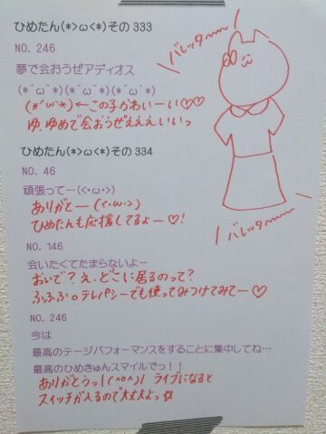
いつもコメントありがとうございますっ
滝がんばったねーって
たくさん褒めてもらった＊るん
いやー行ってよかったー
番組の感想とかもありがとうっ
いつも参考になります！
(＊´・ω・＊)
UTBさん恒例 後ろ姿クイズ
今回の正解は 私 中元日芽香でした！
こーんな雰囲気。
ついに...ついにUTBさんのグラビアに
呼んでいただきました
もんのすんごい嬉しかった(´；ω；｀)
みんなのキレイなお写真を見て
ひめたんもいつかお声がかかればいいなーなんて
密かに楽しみにしてたの！！！
ナチュラルな感じがテーマです
UTB２月号よろしくお願いします＊
あっそうそうちなみに
UTB１月号のみおちゃん(堀未央奈ちゃん)の
見たんだよー( ´ ▽ ` )
すーんごーくかわいかったー♪♪
みおちゃんんゆんんってなったよー
とゆーことで
前回は告知祭り＆コーナー名募集という
みなさんにとって優しくない記事だったのに
たくさんコメントありがとうございました( ；∀；)
◎ミュージックドラゴン
◎MUSIC FAIR
チェックしてくださった方ありがとうっ
ミュージックドラゴンは
夜遅い時間まで待っててくださったみたいで
次の日大丈夫だったかな？朝ちゃんと起きれたー？
MUSIC FAIRは地元のおともだちも観てくれて
なんだか嬉しかったな
広島じゃ乃木どこやってないのよ←
そしてコーナー名ご協力ありがとーうっ♪
一通りノートに羅列してみたのよー
そしたら気になるお名前がいーっぱいあって
もーんのすんごい悩んだんだよねー
だからお願いします
もう少しだけ時間を下さい(´；ω；｀)
次までにきっと決定してお知らせするね
ちなみにもんのすごい数になっております
しかも秀逸なのばっかり......さすがやな。
最近 茶色のムートンしか履いてない。
これは女子としてどうなんだろう......

 ひめたんに最近キュンキュンしてます。
ひめたんに最近キュンキュンしてます。
どう落とし前つけてくれるのですか？w
推し変の危機なんですが？？落とし前(´・ω・｀)
それはひめたんが悪いんですかねー
そうですよねーひめたんが悪いよね
あーもーほんとにごめんなさい
とりあ推し増推奨派です
推し変もそりゃ...嬉しいけどさ......
ひめたんってハリーポッターみてる？？いっちゃん最初の賢者の石しか
みてないんですよー
ハリポタちっちゃい頃に見たときに
怖いなーってなったんでしょうかねー
ひめたんはイタリアン料理は
食べに行ったりしますか？
また、何が好きかなー？メンバーとごはん行くと
なぜかイタリアン料理率高い気がするー
パスタなら最近はあっさりしたものが好みです。
もしひめたんが一日だけ
動物になれるとしたらなにになる？ねこさんかなー
ごろごろにゃーにゃー♪
あってかね雑談なんだけど
ひめたんなぜか喉が鳴るんですよごろごろーって。
ところで「たんひめ」と
呼ばれていましたけど、それを
私たちが呼んだら怒るかな？怒らんよー(｀・ω・´)
そうそう、まいまいとかにはいつも
たんひめーって呼ばれるわ＊
ひめたんの好きだった給食はー？？揚げぱんかな！
きなこ味が取り分け好きだったー♪
ひめたんもイクタァみたいに夜になると
変なテンションになるのかな？ひめたんは逆におとなしくなります。
ロケバスなんかだと
いくちゃんがわーきゃーして
ひめたんがなだめる。
多分眠くなるってゆーか
カラダがおやすみモードなんだと思う
ひめたんの「横浜」のイメージは？おっしゃれーなイメージ(*^O^*)
広島で育ってきただけに横浜は
敷居が高いイメージです。
ままが横浜好きで、たまに遊び行くんだけど
ちょっとステキなワンピースで行きたくなる。
ひめたんはみかん食べる時、
皮剥いたあとに白いやつも剥く派？
それとも剥かずに食べる派？それとも乃木坂派？もちろん乃木坂派です( ^ω^ )
みかんを食べる時は乃木坂派( ^ω^ )
どう？伝わった？？
ひめたんはショートケーキのいちごは
後で食べる派？それとも先に食べちゃう派？？？乃木坂派です( ^ω^ )
ごめんなさい真面目に答えます
先に食べちゃうかな☆
ひめたんのブログの
コメント欄下２ケタに46を踏んだ方へ
手書きでコメ辺するコーナー
＼ Today's 46 (仮)／
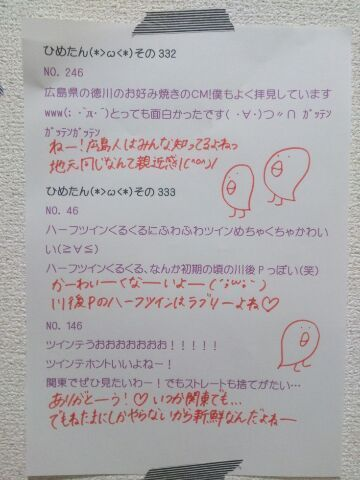
この前は乃木どこ収録させていただきました！
最初はただただ緊張してたんだけど
だんだん楽しくなってきたよー
このあとのオンエアもぜひ観てね＊
感想お待ちしております滝！
(＊´・ω・＊)
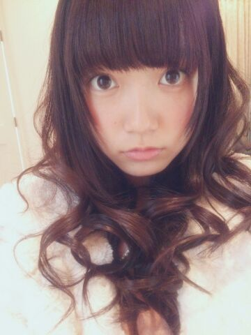
このあと24:58~
ミュージックドラゴンで
バレッタ歌ってます(∩´∀`∩)
ちょーっと夜遅いけど
明日お仕事ないよ学校ないよって方は
ぜひ夜更かしして観てください＊
今晩だけはひめたんが許す！
ついでにお知らせっ
11/23(土)18:00~MUSIC FAIR
こっちもバレッタ歌ってます
よろしくお願いします＊
それから、ちょっと先の話だけど
公式で発表になったので
お知らせさせてくださいっ
12/22(日)
国立代々木競技場第一体育館
FamilyMart Presents
MUSIC FOR ALL, ALL FOR ONE 2013
今年も出させていただけることに
なりました！
武道館の次の次の日。
ぜひ遊びに来てください♪
私たちのニューシングル「バレッタ」が
先行配信スタートしました！！
レコチョクではオリジナル携帯待受をプレゼント！！
詳しくは公式HPでみてね！
DLはこちら！
http://recochoku.jp/artist/30168093/
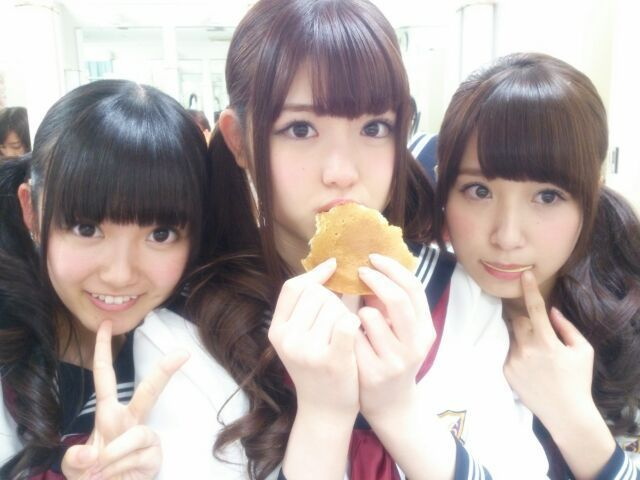
さて、ひめたんがいつも最後に貼ってる
手書きの質問返しの写めですが
最近ひめきゅんさんになったよーって方にも
知っていただきたいので
改めて説明しますね◎
ブログのコメント欄に
書いていただいた質問の中から
いくつかピックアップして答えたりしていますが
その中でも46、146、246みたいに
下２桁が「46」だった方にはもれなく
手書きで質問返しをしています*\(^o^)/*
ひめたんコメント読むのが好きだから
いつも楽しませてもらってるのねっ
だから、ひめたんと同じように
書いてくださるみなさんにもちょっとでも
わくわくどきどききゅんきゅんしてもらえたら
ひめたんは幸せなのです！
そうだなーなんか今までふわっとやってきたけど
ばっちりコーナー化した方が
わかりやすいよねー
なんかこのコーナーにも名前が欲しい。つけよう。
ひめたんネーミングセンスないので
思いついた方はぜひ教えてくださいなー♪
とりあえず。今日は。どうしよう......
＼ Today's 46

!!!／
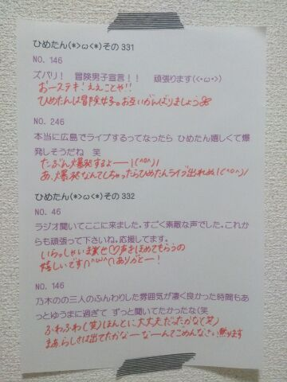
ステキなコーナー名
お待ちしております(切実)
(＊´・ω・＊)